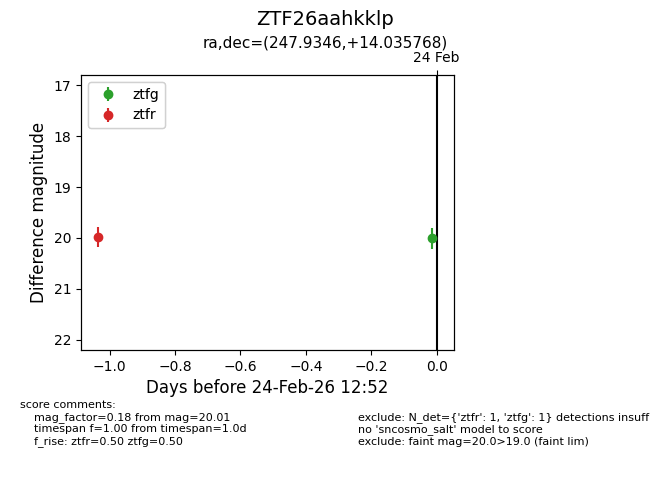
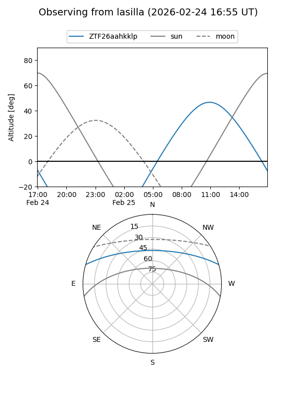
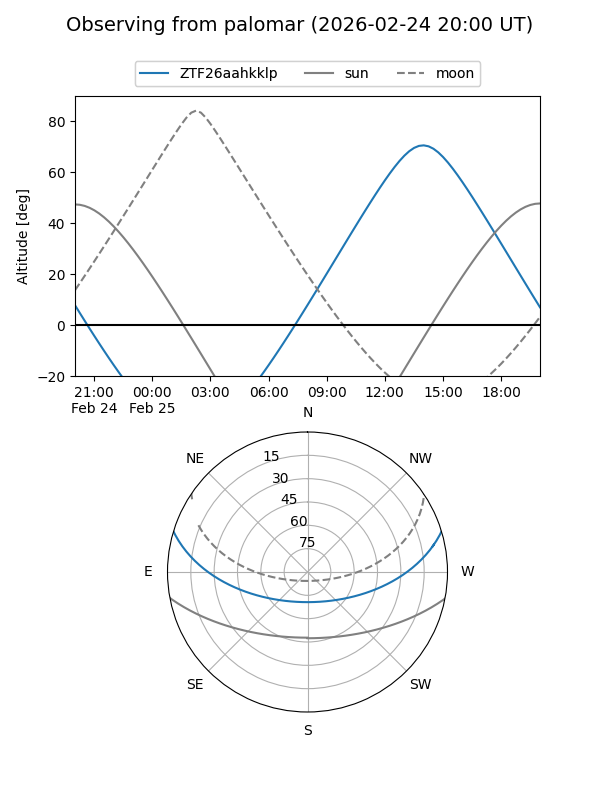
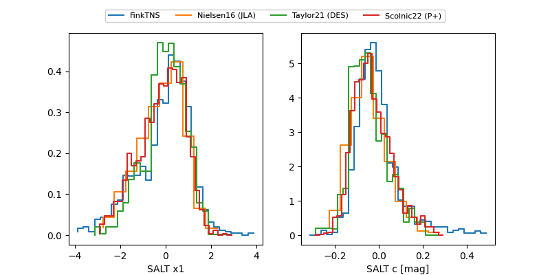

ZTF26aahkklp
Target ZTF26aahkklp at 2026-02-24 12:53
Aliases and brokers:
FINK: link
Lasair: link
ALeRCE: link
alt names
ZTF26aahkklp (ztf,fink_ztf)
Coordinates:
equatorial (ra, dec) = 247.9346,+14.03577
equatorial (HMS+DMS) = 16:31:44.31,+14:02:08.77
galactic (l, b) = (30.2391,+37.22136)
Flags:
Photometry:
last ztfg=20.01, ztfr=19.99
1 ztfg, 1 ztfr detections
Lightcurve

Visibility


Additional plots
